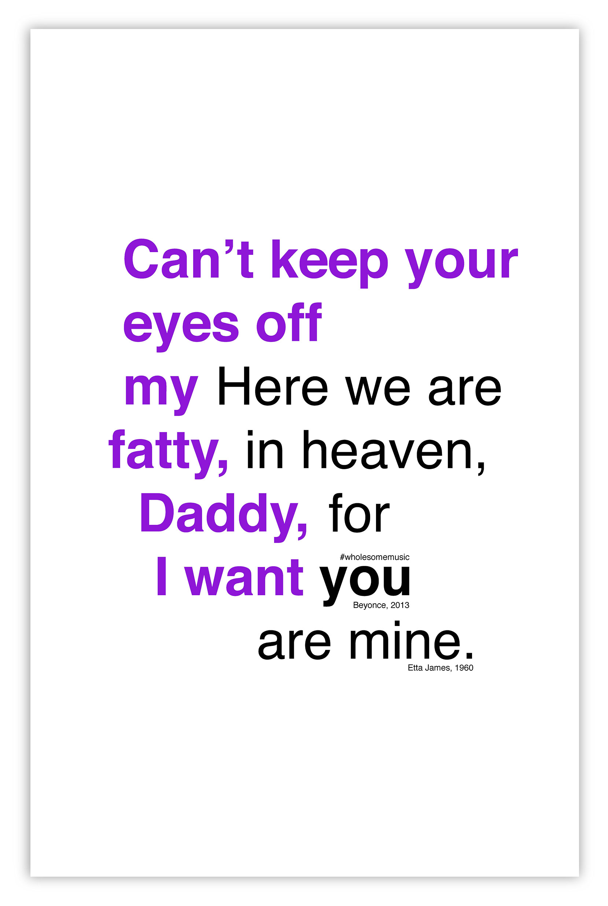

Wholesome Music
Overview
If you take a look at Billboard’s Hot 100, you’ll see Taylor Swift, Justin Bieber, Rihanna, and many more artists that have created songs that we can’t seem to get out of our heads. They’re catchy and addictive. But are we really understanding the lyrics? I did some research and found that the lyrics are mostly provocative, explicit, and sexual. Through this series of posters, I wanted to question the message of music nowadays. To do this, I contrasted the lyrics with songs from Billboard’s Top 50 from the 1960s. The songs from the past seemed, to me, to be more poetic and gentle. Where did wholesome music go?
Tools
Adobe Photoshop
Colors
I used bold and bright colors to reflect the excitement and 'pop!' of current music. Older song lyrics are set in black to reflect something of the past.
Typeface
All text was set in Helvetica because I believe it represents the contemporary, but also it is neutral and prevalent enough to not interfere with the message.
Wild Thing
You make my heart sing.
Posters
I mashed the lyrics together so they share a word together and intersect. I want to show that though they essentially say similar ideas, the way it is presented is totally different. The nonsensical reading top-down furthers the idea of contrasting lyrics to show how much has changed over time.


